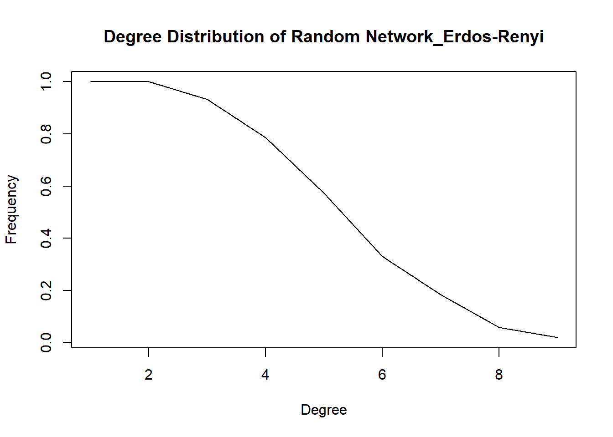

Rows: 200 Columns: 6
-- Column specification --------------------------------------------------------
Delimiter: ","
chr (5): Region From, From, To, Mode, Notes
dbl (1): Miles
i Use `spec()` to retrieve the full column specification for this data.
i Specify the column types or set `show_col_types = FALSE` to quiet this message.
Compute the density of the network. Is this a global or local measure? Does it have a relationship with average degree?
Code
# densitygraph.density(got_distances.ig)
Code
# density without loopsgraph.density(got_distances.ig, loops=FALSE)
Code
# density with loopsgraph.density(got_distances.ig, loops=TRUE)
Code
# the degree of each nodenode_degrees <- igraph::degree(got_distances.ig)print(node_degrees)# average degreeavg_degree <-mean(node_degrees)print(avg_degree)
Code
# data frame with node names and degreegraph_nodes <-data.frame(name =V(got_distances.ig)$name, degree = igraph::degree(got_distances.ig, loops =FALSE))# in_degree and out_degree graph_nodes <- graph_nodes %>%mutate(in_degree = igraph::degree(got_distances.ig, mode ="in", loops =FALSE),out_degree = igraph::degree(got_distances.ig, mode ="out", loops =FALSE))
Create a random (Erdos-Renyi) network with the same number of nodes and edges than the network of your choice. On igraph, the necessary commands are random.graph.game(n, p.or.m, type = c("gnp", "gnm"), directed = FALSE, loops = FALSE) (deprecated), sample_gnp(n, p, directed = FALSE, loops = FALSE) or sample_gnm(n, m, directed = FALSE, loops = FALSE). The p.or.m argument is to specify the probability of an edge \(p\) or the number of edges \(m\).
Compare the densities, dyad and triad censuses, and degree distributions, with the measures of the network of your choice. Does the comparison us something about the network of your choice?
Code
# Densitydensity_original <-graph.density(got_distances.ig)density_random <-graph.density(random_network_erdos)print(paste("Density of GOT Distances network: ", density_original))print(paste("Density of random network: ", density_random))# Dyad censusdyad_original <-dyad_census(got_distances.ig)dyad_random <-dyad_census(random_network_erdos)print(dyad_original)print(dyad_random)# Triad censustriad_original <-triad_census(got_distances.ig)triad_random <-triad_census(random_network_erdos)
Warning in triad_census(random_network_erdos): At core/misc/motifs.c:1165 :
Triad census called on an undirected graph.
Code
print(triad_original)print(triad_random)# Degree distributiondegree_original <-degree_distribution(got_distances.ig, cumulative =TRUE)degree_random <-degree_distribution(random_network_erdos, cumulative =TRUE)plot(degree_original, main="Degree Distribution of GOT Distances", xlab="Degree", ylab="Frequency", type='l')
Code
plot(degree_random, main="Degree Distribution of Random Network_Erdos-Renyi", xlab="Degree", ylab="Frequency", type='l')

Source Code
---title: "Challenge_Three"author: "Cynthia Hester"description: "Degree and Density of a Network"date: "03/06/2023"format: html: toc: true code-fold: true code-copy: true code-tools: truecategories: - hw_challenge_3 - Cynthia Hester---```{r}#| label: setup#| include: false#| library(igraph)library(network)library(statnet)library(tidyverse)library(readr)```#### GOT distances data setDescribe the many measures of degree, as well as density, of a network and compare #### Import Data```{r,results='hide'}library(readr)got_distances <- readr::read_csv("C:/Users/Bud/Desktop/DACSS_697E_Social Network Analysis_SP2023/Social_Networks_SP_2023/posts/_data/got/got_distances.csv")``````{r,results='hide'}head(got_distances)``````{r,results='hide'}got_distances.ig <-graph_from_data_frame(got_distances, directed = T)``````{r,results='hide'}#nodesvcount(got_distances.ig)``````{r,results='hide'}#edgesecount(got_distances.ig)``````{r,results='hide'}#names of nodes attributesvertex_attr_names(got_distances.ig)``````{r,results='hide'}#edge attributesedge_attr_names(got_distances.ig)``````{r,results='hide'}#dyad censusigraph::dyad.census(got_distances.ig)``````{r,results='hide'}#triad censusigraph::triad.census(got_distances.ig)```## DensityCompute the density of the network. Is this a global or local measure? Does it have a relationship with average degree? ```{r,results='hide'}# densitygraph.density(got_distances.ig)``````{r,results='hide'}# density without loopsgraph.density(got_distances.ig, loops=FALSE)``````{r,results='hide'}# density with loopsgraph.density(got_distances.ig, loops=TRUE)``````{r,results='hide'}# the degree of each nodenode_degrees <- igraph::degree(got_distances.ig)print(node_degrees)# average degreeavg_degree <-mean(node_degrees)print(avg_degree)``````{r,results='hide'}# data frame with node names and degreegraph_nodes <-data.frame(name =V(got_distances.ig)$name, degree = igraph::degree(got_distances.ig, loops =FALSE))# in_degree and out_degree graph_nodes <- graph_nodes %>%mutate(in_degree = igraph::degree(got_distances.ig, mode ="in", loops =FALSE),out_degree = igraph::degree(got_distances.ig, mode ="out", loops =FALSE))```rechecking rows```{r,results='hide'}head(graph_nodes)``````{r,results='hide'}num_nodes <-vcount(got_distances.ig)num_edges <-ecount(got_distances.ig)``````{r,results='hide'}print(num_nodes)print(num_edges)``````{r,results='hide'}random_network_erdos <-sample_gnm(n = num_nodes, m = num_edges, directed =FALSE, loops =FALSE)print(random_network_erdos)```#### Random NetworkCreate a random (Erdos-Renyi) network with the same number of nodes and edges than the network of your choice. On `igraph`, the necessary commands are `random.graph.game(n, p.or.m, type = c("gnp", "gnm"), directed = FALSE, loops = FALSE)` (deprecated), `sample_gnp(n, p, directed = FALSE, loops = FALSE)` or `sample_gnm(n, m, directed = FALSE, loops = FALSE)`. The `p.or.m` argument is to specify the probability of an edge $p$ or the number of edges $m$.Compare the densities, dyad and triad censuses, and degree distributions, with the measures of the network of your choice. Does the comparison us something about the network of your choice? ```{r,results='hide'}# Densitydensity_original <-graph.density(got_distances.ig)density_random <-graph.density(random_network_erdos)print(paste("Density of GOT Distances network: ", density_original))print(paste("Density of random network: ", density_random))# Dyad censusdyad_original <-dyad_census(got_distances.ig)dyad_random <-dyad_census(random_network_erdos)print(dyad_original)print(dyad_random)# Triad censustriad_original <-triad_census(got_distances.ig)triad_random <-triad_census(random_network_erdos)print(triad_original)print(triad_random)# Degree distributiondegree_original <-degree_distribution(got_distances.ig, cumulative =TRUE)degree_random <-degree_distribution(random_network_erdos, cumulative =TRUE)plot(degree_original, main="Degree Distribution of GOT Distances", xlab="Degree", ylab="Frequency", type='l')plot(degree_random, main="Degree Distribution of Random Network_Erdos-Renyi", xlab="Degree", ylab="Frequency", type='l')```